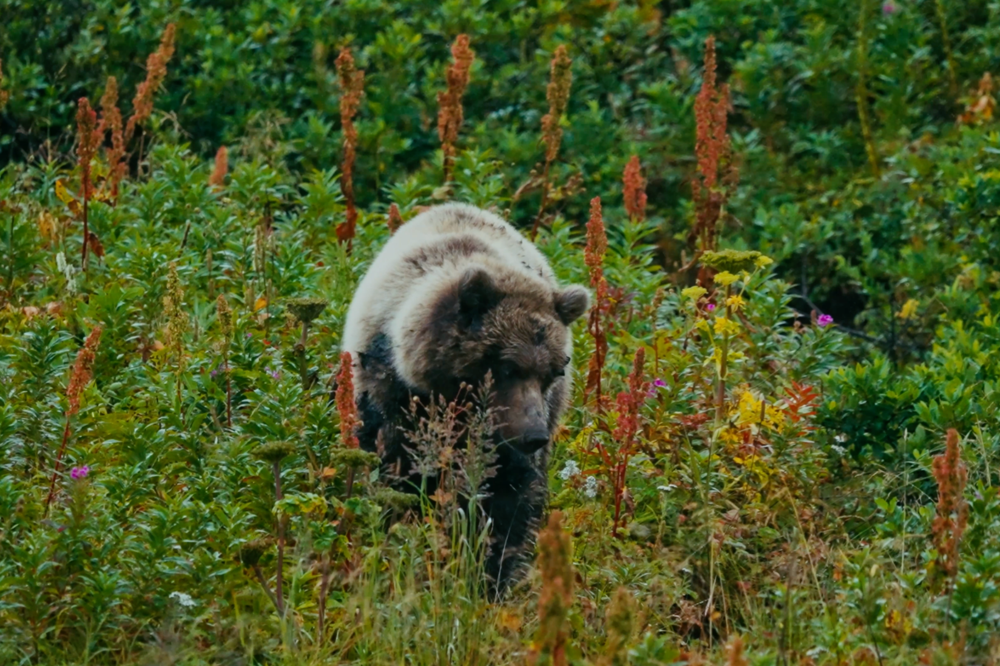

View project ↗Documentary · Producer
The Bear
Beneath
Produced a short documentary directed by Olivia Hille on California’s grizzly bear restoration debate, overseeing the project from research through final cut within UC Santa Barbara’s GreenScreen program.
The film premiered at the Santa Barbara International Film Festival in 2026 and was recognized by the Directors Guild of America and the USC Eco Media Festival.
Santa Barbara International Film Festival
DGA Student Spotlight
USC Eco Media Festival